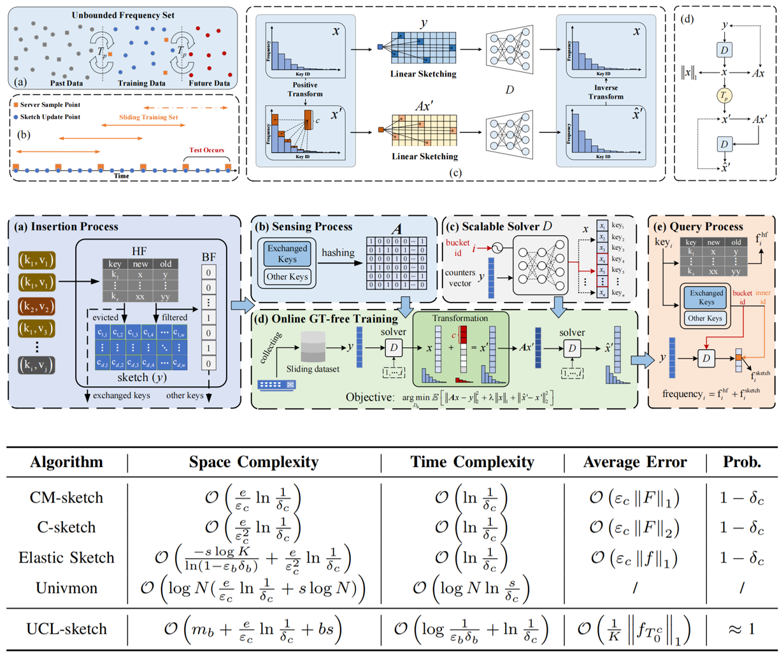
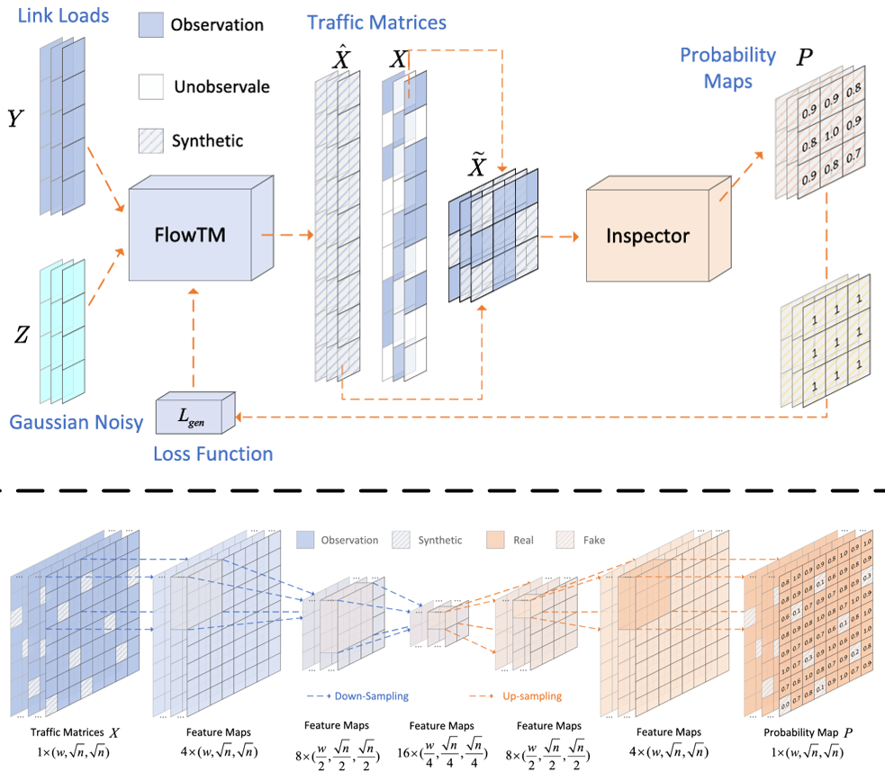
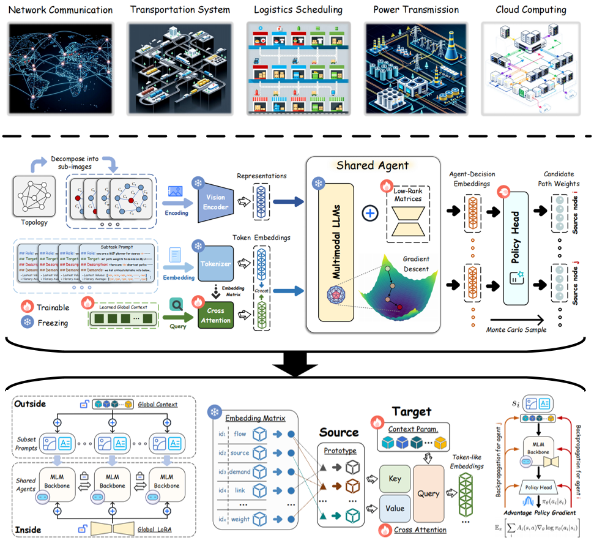
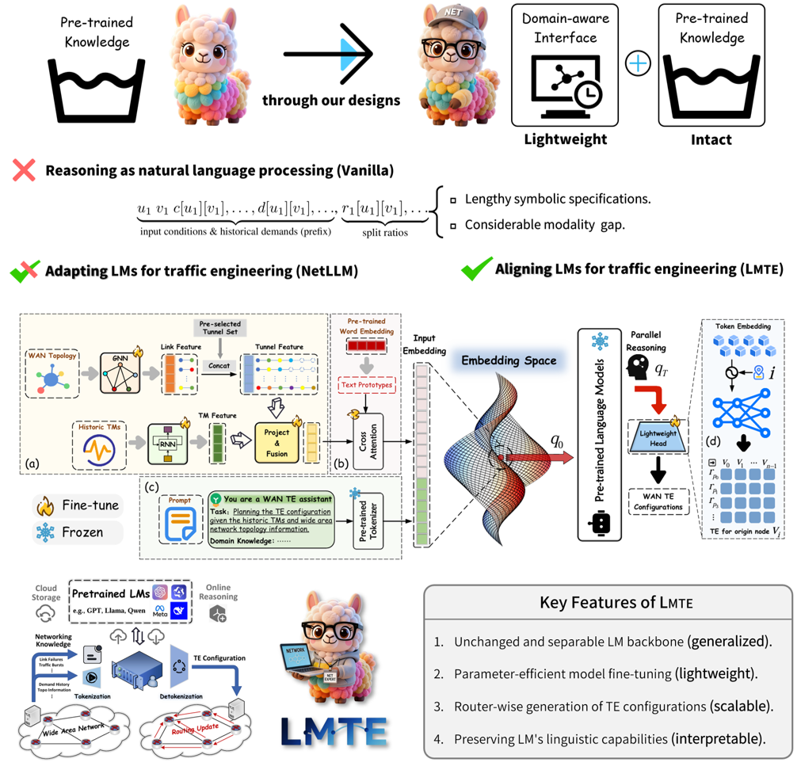
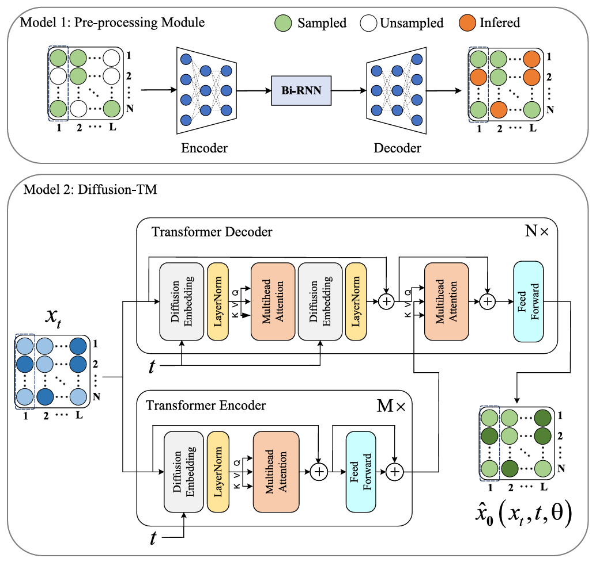
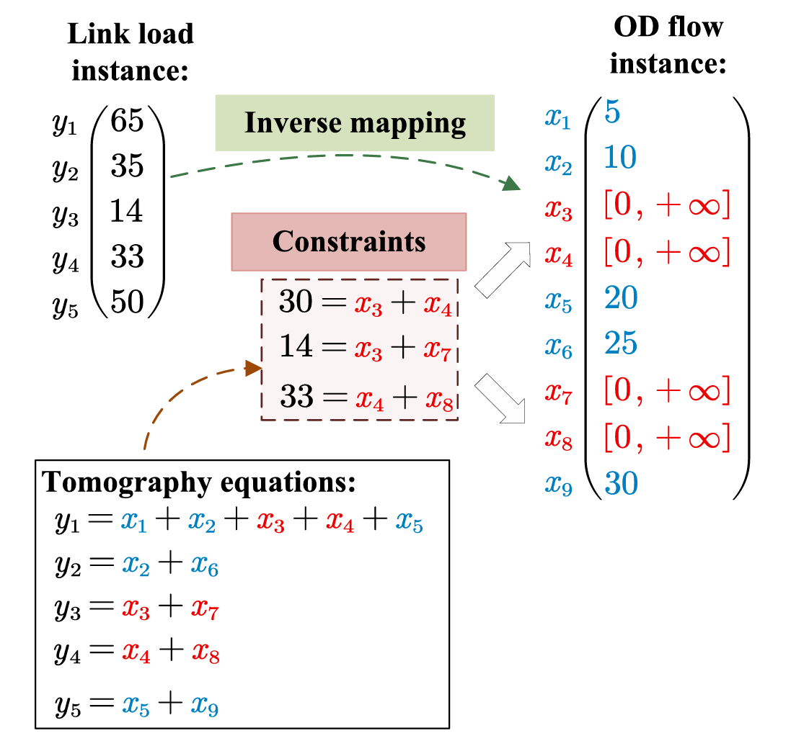
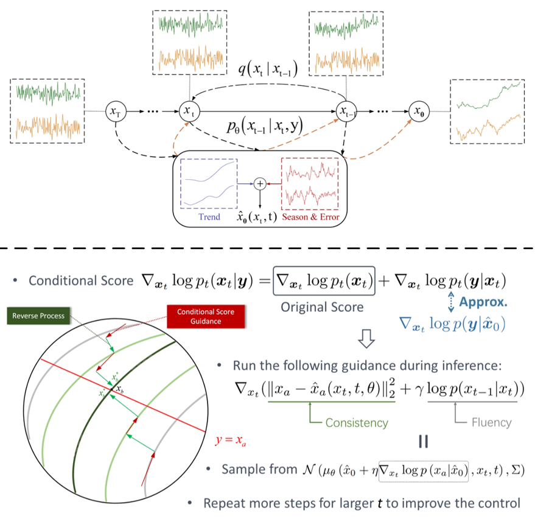
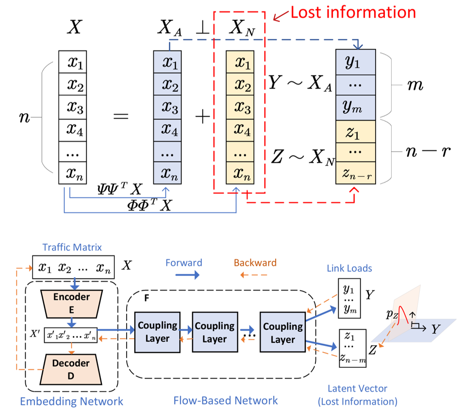
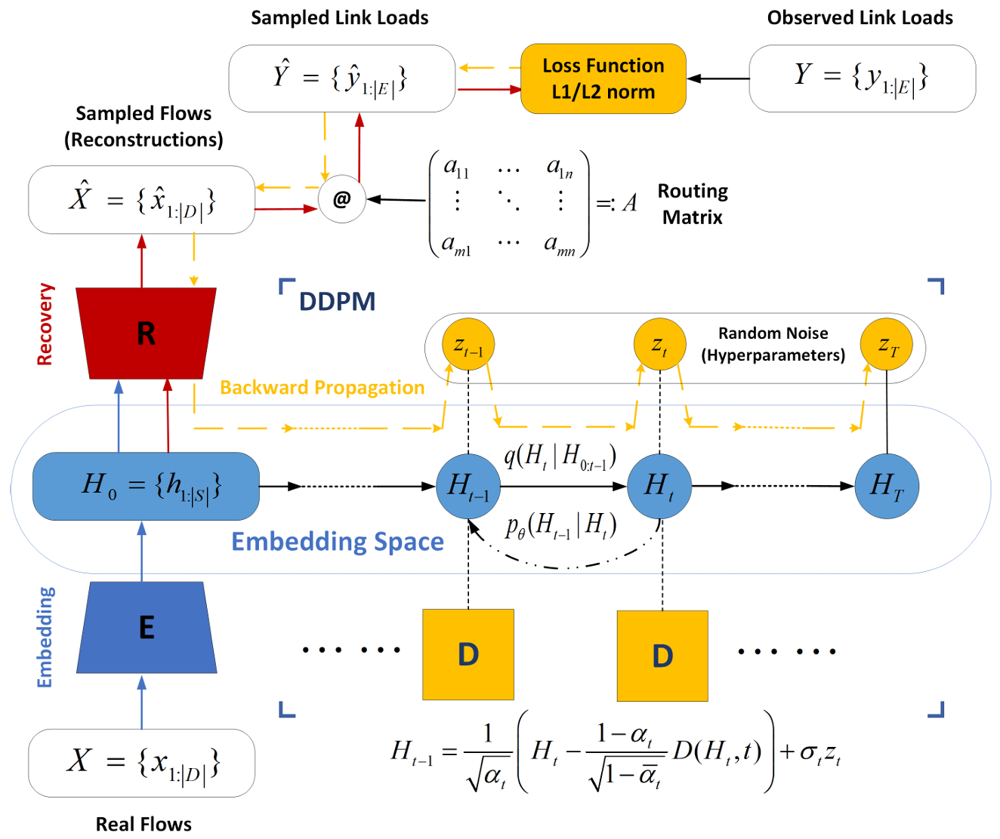
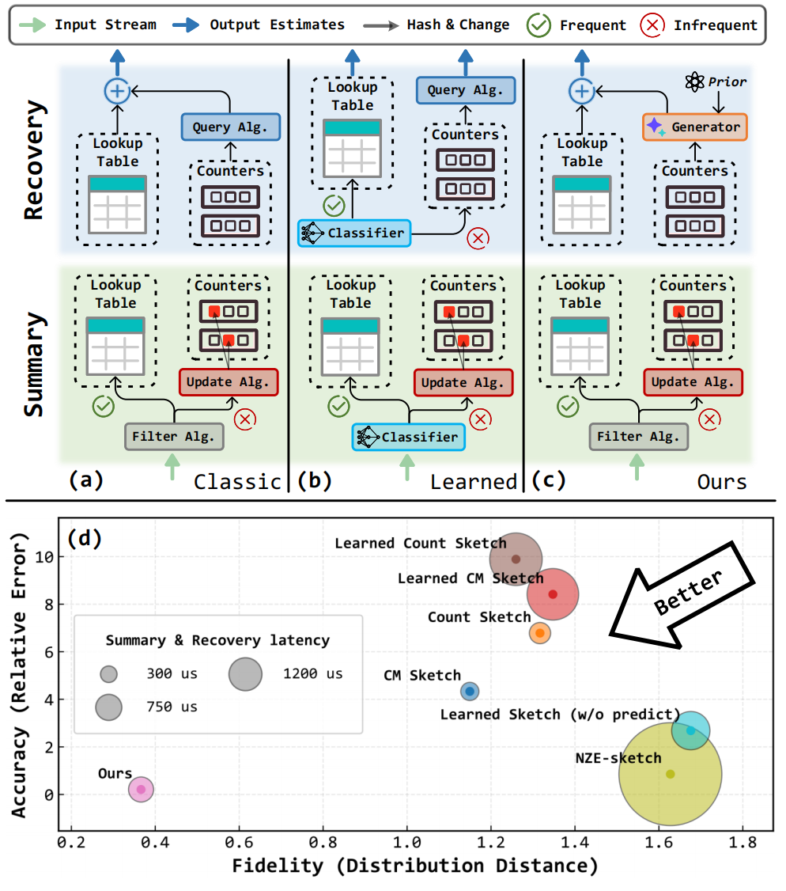

Learning-based Sketches for Frequency Estimation in Data Streams without Ground Truth
Ph.D. student, College of Computer Science and Technology, Zhejiang University
Email: yxy5315@gmail.com
I am pursuing my Ph.D. at Zhejiang University, where I am part of the ArcLab research group led by Prof. Wenzhi Chen.
Before that, I received my M.Eng. and B.Eng. from the School of Artificial Intelligence at Hefei University of Technology and School of Information and Artificial Intelligence at Anhui Agricultual University respectively, advised by Assoc. Prof. Yan Qiao.
Download my CV
My primary research interests include network systems, machine learning, AI-generated content (AIGC) and embodied intelligence. I am actively working on (networking) services computing and applications empowered by machine learning. I am also working on studying powerful generative models, e.g., diffusions and LLMs.

Estimating the frequency of items on the high-volume, fast data stream has been extensively studied in many areas, such as database and network measurement. Traditional sketches provide only coarse estimates under strict memory constraints. Although some learning-augmented methods have emerged recently, they typically rely on offline training with real frequencies or/and labels, which are often unavailable. Moreover, these methods suffer from slow update speeds, limiting their suitability for real-time processing despite offering only marginal accuracy improvements. To overcome these challenges, we propose UCL-sketch, a practical learning-based paradigm for per-key frequency estimation. Our design introduces two key innovations: (i) an online training mechanism based on equivalent learning that requires no ground truth (GT), and (ii) a highly scalable architecture leveraging logically structured estimation buckets to scale to real-world data stream. The UCL-sketch, which utilizes compressive sensing (CS), converges to an estimator that provably yields a error bound far lower than that of prior works, without sacrificing the speed of processing. Extensive experiments on both real-world and synthetic datasets demonstrate that our approach outperforms previously proposed approaches regarding per-key accuracy and distribution. Notably, under extremely tight memory budgets, its quality almost matches that of an (infeasible) omniscient oracle. Moreover, compared to the existing equation-based sketch, UCL-sketch achieves an average decoding speedup of nearly 500 times.

Given the high cost associated with directly measuring the Traffic Matrix (TM), researchers have devoted efforts to devising methods for estimating the complete TM from low-cost link loads by solving a set of heavily ill-posed linear equations. Today’s increasingly intricate networks present an even greater challenge: as adaptive and dynamically changing routing strategies are gradually replacing traditional fixed routing schemes, the routing matrix within these equations can no longer be deemed reliable. In our previous work, we pioneered a flow-based generative model, FlowTM, which estimated the TM by establishing an invertible correlation between the TM and link loads without relying on the routing matrix. We demonstrated that the missing information in the ill-posed equations can be decoupled from the TM and learned jointly with the invertible mapping. Considering that acquiring a complete training set for FlowTM is often impractical in many real-world networks, we further propose an enhanced model, FlowTM+, in this extended work. It incorporates an Inspector module to mine deeper latent structures from the partially observed TM data and link load measurements. This new technique effectively compensates for unobservable information in the training data. Extensive experiments demonstrate that FlowTM improves the performance of the best baseline by 38%–58% when the actual routing matrix is absent. Remarkably, with only 2% of the training data, FlowTM+ achieves an estimation accuracy comparable to that of state-of-the-art baselines trained with full routing knowledge and complete training data.

The multi-commodity flow (MCF) problem is a fundamental topic in network flow and combinatorial optimization, with broad applications in transportation, communication, and logistics, etc. Nowadays, the rapid expansion of allocation systems has posed challenges for existing optimization engines in balancing optimality and tractability. In this paper, we present Pram, the first ML-based method that leverages the reasoning power of multimodal language models (MLMs) for addressing the trade-off dilemma -- a great need of service providers. As part of our proposal, Pram (i) quickly computes high-quality allocations by dividing the original problem into local subproblems, which are then resolved by an MLM-powered "agent", and (ii) ensures global consistency by harmonizing these subproblems via a multi-agent reinforcement learning algorithm. Theoretically, we show that Pram, which learns to perform gradient descent in context, provably converges to the optimum within the family of MCF problems. Empirically, on real-world datasets and public topologies, Pram achieves performance comparable to, and in some cases even surpassing, linear programming solvers (very close to the optimal solution), and substantially lower runtimes (1 to 2 orders of magnitude faster). Moreover, Pram exhibits strong robustness (<10% performance degradation under link failures or flow bursts), demonstrating MLM's generalization ability to unforeseen events. Pram is objective-agnostic and seamlessly integrates with mainstream allocation systems, providing a practical and scalable solution for future networks.

The rapid expansion of modern wide-area networks (WANs) has made traffic engineering (TE) increasingly challenging, as traditional solvers struggle to keep pace. Although existing offline ML-driven approaches accelerate TE optimization with deep neural networks (DNNs), they often lack sufficient expressiveness and generalization on unseen traffic patterns or topologies, limiting their practicality. Inspired by the success of large language models (LMs), for the first time, this paper investigates their potential as general-purpose traffic planners. Our contributions are two-fold: (i) Theoretically, we show that pre-trained LMs can simulate the sequential decision processes underlying TE and, crucially, exhibit parallel reasoning capabilities, making them well-suited for the task; (ii) Practically, we present LMTE, a novel LM-driven TE framework that embraces these insights through efficient multimodal alignment and lightweight configuration generation, all while preserving the model's original abilities. Extensive experiments demonstrate that fold matches top-tier performance on five datasets, achieving up to 15% better maximum link utilization (MLU) and consistently lower performance degradation across diverse scenarios, e.g., less than 5% with high traffic dynamics and link failures. Moreover, it achieves 10 to 100 times speedups over traditional TE solvers.

Due to network operation and maintenance relying heavily on network traffic monitoring, traffic matrix analysis has been one of the most crucial issues for network management related tasks. However, it is challenging to reliably obtain the precise measurement in computer networks because of the high measurement cost, and the unavoidable transmission loss. Although some methods proposed in recent years allowed estimating network traffic from partial flow-level or link-level measurements, they often perform poorly for traffic matrix estimation nowadays. Despite strong assumptions like low-rank structure and the prior distribution, existing techniques are usually task-specific and tend to be significantly worse as modern network communication is extremely complicated and dynamic. To address the dilemma, this paper proposed a diffusion-based traffic matrix analysis framework named Diffusion-TM, which leverages problem-agnostic diffusion to notably elevate the estimation performance in both traffic distribution and accuracy. The novel framework not only takes advantage of the powerful generative ability of diffusion models to produce realistic network traffic, but also leverages the denoising process to unbiasedly estimate all end-to-end traffic in a plug-and-play manner under theoretical guarantee. Moreover, taking into account that compiling an intact traffic dataset is usually infeasible, we also propose a two-stage training scheme to make our framework be insensitive to missing values in the dataset. With extensive experiments with real-world datasets, we illustrate the effectiveness of Diffusion-TM on several tasks. Moreover, the results also demonstrate that our method can obtain promising results even with 5% known values left in the datasets.

Estimating the Traffic Matrix (TM) is a critical yet resource-intensive process in network management. With the advent of deep learning models, we now have the potential to learn the inverse mapping from link loads to origin-destination (OD) flows more efficiently and accurately. However, a significant hurdle is that all current learning-based techniques necessitate a training dataset covering a comprehensive TM for a specific duration. This requirement is often unfeasible in practical scenarios. This paper addresses this complex learning challenge, specifically when dealing with incomplete and biased TM data. Our initial approach involves parameterizing the unidentified flows, thereby transforming this problem of target-deficient learning into an empirical optimization problem that integrates tomography constraints. Following this, we introduce AutoTomo, a learning-based architecture designed to optimize both the inverse mapping and the unexplored flows during the model’s training phase. We also propose an innovative observation selection algorithm, which aids network operators in gathering the most insightful measurements with limited device resources. We evaluate AutoTomo with three public traffic datasets Abilene, GÉANT and Cernet. The results reveal that AutoTomo outperforms five state-of-the-art learning-based TM estimation techniques. With complete training data, AutoTomo enhances the accuracy of the most efficient method by 15%, while it shows an improvement between 30% to 56% with incomplete training data. Furthermore, AutoTomo exhibits rapid testing speed, making it a viable tool for real-time TM estimation.

Denoising diffusion probabilistic models (DDPMs) are becoming the leading paradigm for generative models. It has recently shown breakthroughs in audio synthesis, time series imputation and forecasting. In this paper, we propose Diffusion-TS, a novel diffusion-based framework that generates multivariate time series samples of high quality by using an encoder-decoder transformer with disentangled temporal representations, in which the decomposition technique guides Diffusion-TS to capture the semantic meaning of time series while transformers mine detailed sequential information from the noisy model input. Different from existing diffusion-based approaches, we train the model to directly reconstruct the sample instead of the noise in each diffusion step, combining a Fourier-based loss term. Diffusion-TS is expected to generate time series satisfying both interpretablity and realness. In addition, it is shown that the proposed Diffusion-TS can be easily extended to conditional generation tasks, such as forecasting and imputation, without any model changes. This also motivates us to further explore the performance of Diffusion-TS under irregular settings. Finally, through qualitative and quantitative experiments, results show that Diffusion-TS achieves the state-of-the-art results on various realistic analyses of time series.

Given the high cost associated with directly measuring the traffic matrix (TM), researchers have dedicated decades to devising methods for estimating the complete TM from low-cost link loads by solving a set of heavily ill-posed linear equations. Today’s increasingly intricate networks present an even greater challenge: the routing matrix within these equations can no longer be deemed reliable. To address this challenge, we, for the first time, employ a flow-based generative model for TM estimation by establishing an invertible correlation between TM and link loads, oblivious of the routing matrix. We demonstrate that the lost information within the ill-posed equations can be independently segregated from the TM. Our model collaboratively learns the invertible correlations between TM and link loads as well as the distribution of the lost information. As a result, our model can unbiasedly reverse-transform the link loads to the true TM. Our model has undergone extensive experiments on two real-world datasets. Surprisingly, even without knowledge of the routing matrix, it significantly outperforms six representative baselines in deterministic and noisy routing scenarios regarding estimation accuracy and distribution similarity. Particularly, if the actual routing matrix is absent, our model can improve the performance of the best baseline by 41% ∼ 58%.
Unsupervised anomaly detection for multivariate time series (MTS) is a challenging task due to the difficulties of precisely learning the complex data patterns of MTS. The recent progress in sample generation achieved by diffusion models (DMs) motivates us to leverage the powerful learning ability of DMs to make a breakthrough in unsupervised anomaly detection for MTS. In this paper, we make the first attempt to design a novel diffusion-based anomaly detection model (named TimeADDM) for MTS data using the effective learning mechanism of DMs. To enhance the learning effect on MTS data, we propose to apply diffusion steps to the representations that accumulate the global time correlations through recurrent embedding. To enable the model for accurate anomaly detection, we design a reconstruction strategy that uses various levels of diffusion to compute the anomaly scores from different angles. By comparing TimeADDM with the state-of-the-art benchmarks, the results demonstrate that TimeADDM outperforms all baselines in terms of detection accuracy in four real-world MTS datasets and makes an improvement on the F1 score by up to 22%.

The traffic matrix estimation (TME) problem has been widely researched for decades of years. Recent progresses in deep generative models offer new opportunities to tackle TME problems in a more advanced way. In this paper, we leverage the powerful ability of denoising diffusion probabilistic models (DDPMs) on distribution learning, and for the first time adopt DDPM to address the TME problem. To ensure a good performance of DDPM on learning the distributions of TMs, we design a preprocessing module to reduce the dimensions of TMs while keeping the data variety of each OD flow. To improve the estimation accuracy, we parameterize the noise factors in DDPM and transform the TME problem into a gradient-descent optimization problem. Finally, we compared our method with the state-of-the-art TME methods using two real-world TM datasets, the experimental results strongly demonstrate the superiority of our method on both TM synthesis and TM estimation.

Sketch techniques have been extensively studied in recent years and are especially well-suited to data streaming scenarios, where the sketch summary is updated quickly and compactly. However, it is challenging to recover the current state from these summaries in a way that is accurate, fast, and real. In this paper, we seek a new solution that reconciles this tension, aiming for near-perfect recovery with lightweight computational procedures. Focusing on linear sketching problems of the form Φf → f, our study proceeds in three phases. First, we revisit existing techniques and show the root cause of the dilemma: an orthogonal information loss during the summarization process. Second, we investigate how generative priors can be leveraged to bridge the gap and thereby allow theoretically superior recovery. Third, we present FLORE, the first generative sketching paradigm to embrace these analyses. At its core, FLORE integrates invertible flows with efficient sketch instances to achieve the best of two worlds. More importantly, FLORE can be trained online without access to ground-truth data, which is readily deployable in practice. Comprehensive experiments demonstrate FLORE's ability to provide high-quality recovery, and support summary with low computing overhead, outperforming previous methods by up to 1000× in error reduction and 100× in processing speed compared to learning-based solutions. Our codebase and technique report are available at Anonymous GitHub, with experimental datasets attached in the supplementary material.